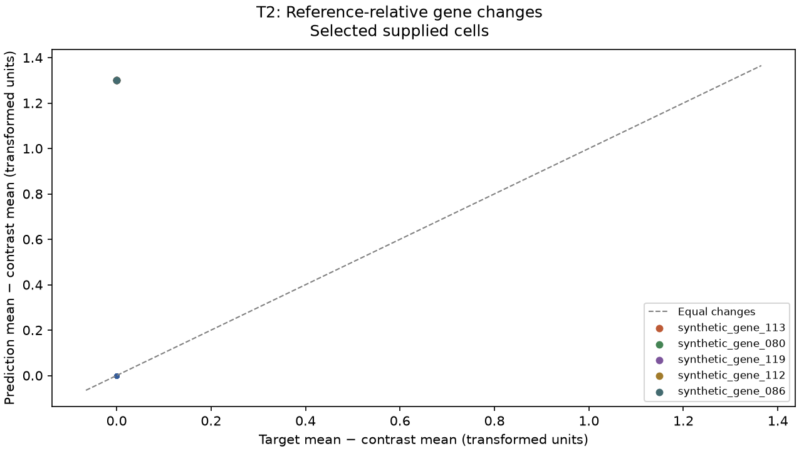
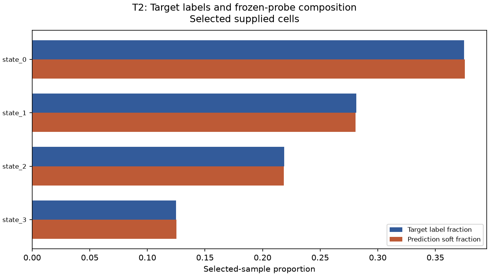
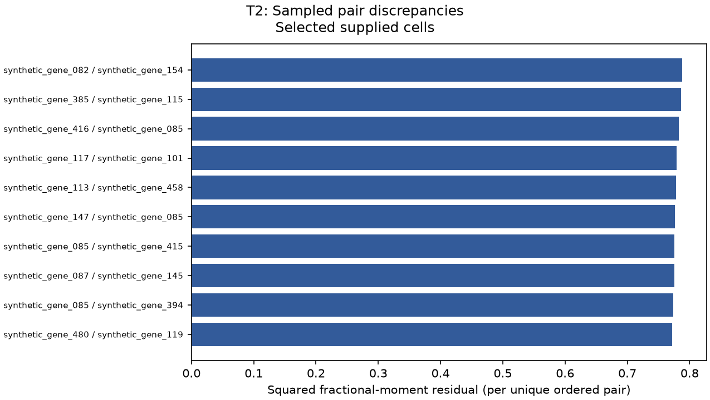
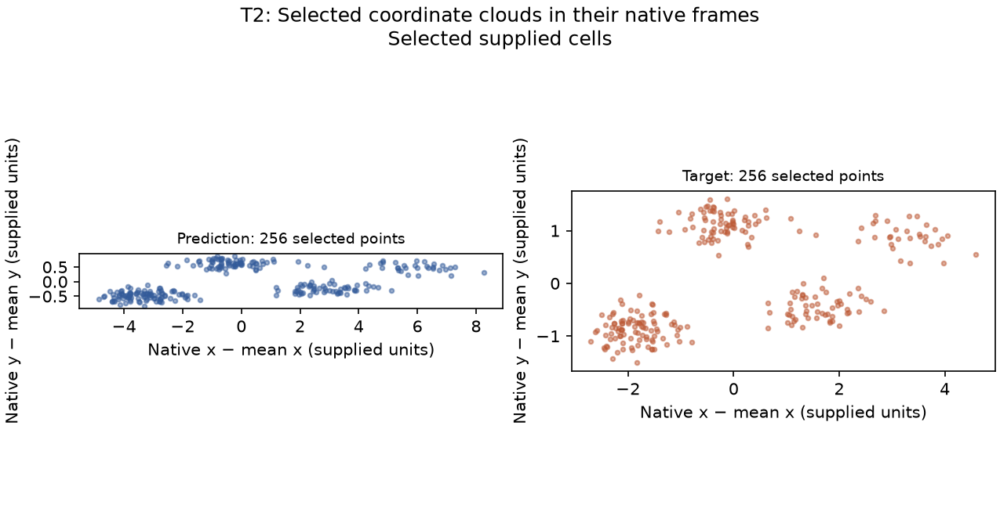
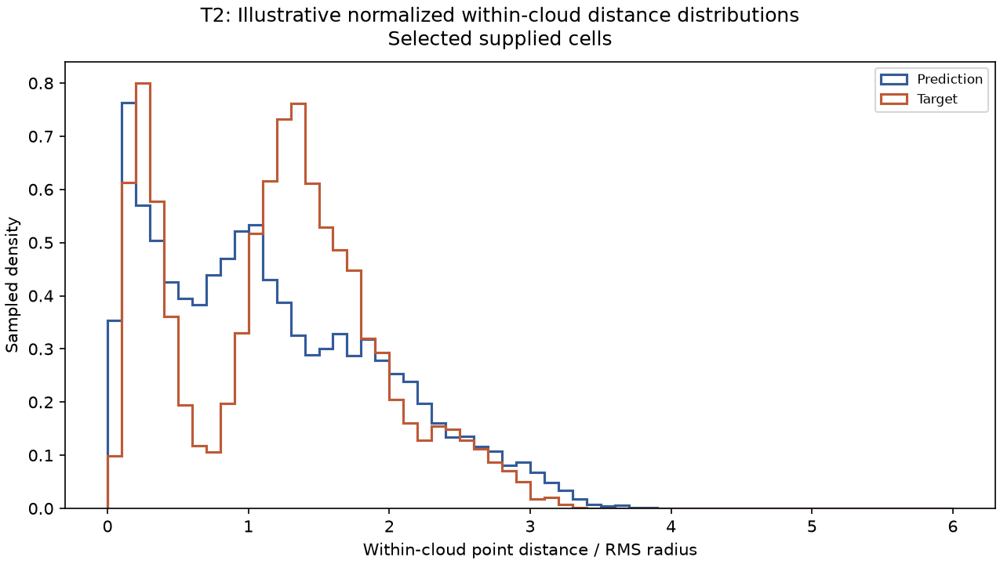
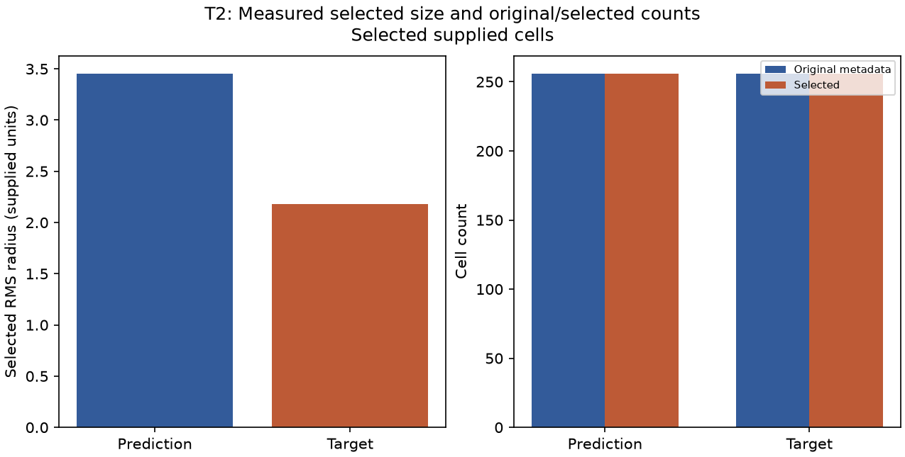
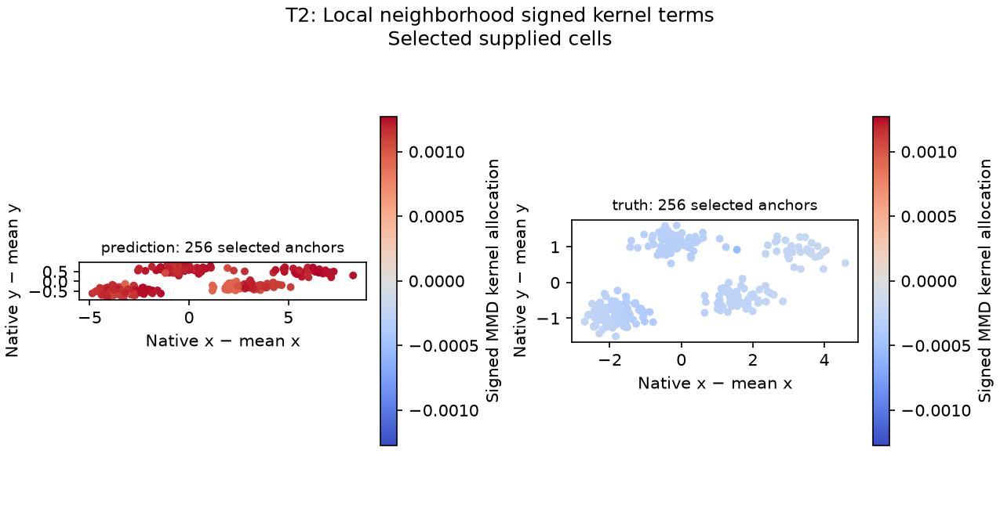

This report assesses a bounded selected subset and the supplied gene panel. Keep it private; it does not certify unscanned rows or hidden-target performance.
Diagnostic follow-up
thresholds exceeded
Coverage: listed rules evaluated. These heuristic conventions are not statistically calibrated, carry no guaranteed false-alarm rate or FDR, and do not establish biological health or model improvement.
Profile scorelens-diagnostic-conventions-v1; fixed domain ordering, at most six displayed findings. Unlike official scalar scales are never compared.
1. Large selected-sample mean residuals
A selected supplied cells; 16 triggered row(s).
entity
measured value
comparator
threshold
units
synthetic_gene_113
1.3
>
0.25
supplied transformed expression
synthetic_gene_080
1.3
>
0.25
supplied transformed expression
synthetic_gene_119
1.3
>
0.25
supplied transformed expression
synthetic_gene_112
1.3
>
0.25
supplied transformed expression
synthetic_gene_086
1.3
>
0.25
supplied transformed expression
Inspect named gene means, input alignment, normalization, and the supplied target/reference contrast.
2. Selected coordinate size discrepancy
D selected supplied cells; 1 triggered row(s).
entity
measured value
comparator
threshold
units
selected RMS radius
0.461538
>
0.223144
absolute selected log RMS-radius ratio
Inspect coordinate units and selected-cloud size. This comparison does not establish biological growth.
Unassessed or unavailable follow-up rules
shape_and_local_priority: Shape and local organization are measured separately but have no adopted priority thresholds; SW/Dice have a source-frame caveat.
laterality: No calibrated anatomical laterality diagnostic is computed.
pair_priority: Sampled variogram and descriptive covariance remain evidence tables without an adopted priority threshold.
sensitivity_priority: Target-aware sensitivity is noncausal and does not determine follow-up priority.
Within listed thresholds means only that evaluated rules did not trigger. It is not a biological or full-file all-clear. Threshold calculations for every assessed row are in diagnostics.json.
Assessed scope
Independent deterministic selection preserves expression/coordinate row correspondence within each file; it does not establish paired cells across files.
input
original cells
selected cells
prediction
256
256
target
256
256
reference
256
256
Official scalar output — selected subset
These values are supplied unchanged by the pinned task v2 scorer. Different metrics have different scales and definitions; no weakest metric or combined priority score is inferred.
metric
value
de_score
null (undefined/not applicable)
de_direction
0.9334
energy_distance
1.96846
mmd_u
0.00189
variogram
0.025676
d2_shape
0.14109
sliced_wasserstein
0.13164
occupancy_dice
0.2727
scale_log_ratio
0.4615
count_log_ratio
0
neighborhood_mmd
0.22098
pb_rel_err
0.038
library_size_ratio
1.058
variance_ratio
1
composition_JSD
0
pseudobulk_pearson
0.7569
morans_I_agreement
0.7542
_de_raw
null (undefined/not applicable)
_de_chance
null (undefined/not applicable)
_n_up
0
_n_dn
0
_sw_flip_spread
0.09271
_dice_voxel_over_nn
5.5
Gene follow-up A
Changes are mean transformed expression relative to the supplied reference (T1/T2) or matched WT (T3), not conventional fold changes. Operational DE calls, ranked slots, and literal signs remain separate. Target nonsignificance does not prove no biological response.
gene
change truth
change pred
absolute error
truth de direction
pred local de direction
official slot hit
synthetic_gene_113
-4.76837e-06
1.3
1.3
none
up
False
synthetic_gene_080
-3.33786e-06
1.3
1.3
none
up
False
synthetic_gene_119
4.76837e-07
1.3
1.3
none
up
False
synthetic_gene_112
0
1.3
1.3
none
up
False
synthetic_gene_086
-4.76837e-07
1.3
1.3
none
up
False
synthetic_gene_114
-1.43051e-06
1.3
1.3
none
up
False
synthetic_gene_117
-4.76837e-07
1.3
1.3
none
up
False
synthetic_gene_087
-1.90735e-06
1.3
1.3
none
up
False
synthetic_gene_115
-9.53674e-07
1.3
1.3
none
up
False
synthetic_gene_085
4.76837e-07
1.3
1.3
none
up
False
Local false-positive means a prediction-only significant signed call, including a reversal; it is not known false biology or an FDR estimate. Full rows are in gene_errors.csv.
Frozen-probe composition A
Prediction labels are ignored. Fractions use the selected target-fitted official probe; a low fraction does not establish biological absence.
celltype
target fraction
pred soft fraction
proportion error
jsd term
state_0
0.375
0.375695
0.000694811
2.31668e-07
state_1
0.28125
0.280776
-0.000474125
1.44295e-07
state_2
0.21875
0.218452
-0.000298023
7.31907e-08
state_3
0.125
0.125077
7.70837e-05
8.6856e-09
Sampled pairs and descriptive covariance B / D
Ordered-pair occurrences and multiplicities are retained for variogram reconciliation. Fractional moments are not pure covariance; population ddof=0 covariance companion columns do not identify regulatory edges.
gene i
gene j
sampled occurrences
variogram squared error
covariance error
synthetic_gene_082
synthetic_gene_154
1
0.787766
1.00967e-10
synthetic_gene_385
synthetic_gene_115
1
0.786177
1.22972e-09
synthetic_gene_416
synthetic_gene_085
1
0.782636
-1.13939e-09
synthetic_gene_117
synthetic_gene_101
1
0.779124
-1.31812e-09
synthetic_gene_113
synthetic_gene_458
1
0.778038
-2.02726e-10
synthetic_gene_147
synthetic_gene_085
1
0.776054
-1.75394e-09
synthetic_gene_085
synthetic_gene_415
1
0.77592
-1.6193e-09
synthetic_gene_087
synthetic_gene_145
1
0.77519
6.73278e-10
synthetic_gene_085
synthetic_gene_394
1
0.773545
6.05883e-10
synthetic_gene_480
synthetic_gene_119
1
0.771714
-4.26037e-10
field
value
n_sampled_pairs
19962
n_unique_ordered_pairs
19213
total_possible_ordered_pairs
249500
unique_ordered_pair_coverage
0.077006
observed_gene_coverage
1
reconciliation_abs_error
4.07642e-10
Coverage is of ordered nonself pairs, not modules. Unsampled pairs have no diagnostic evidence; a small gene module may have no sampled within-module pair even when every gene appears somewhere.
Target-aware MMD sensitivity C
One clipped mean-shift intervention is selected and evaluated on the same target. It is noncausal and nonadditive, may worsen MMD, and is not a repair recommendation or expected training improvement.
Change = after − before; negative unbiased MMD values remain valid. Requested shifts, achieved shifts, and clipping are in diagnostics.json.
Task-specific evidence
Spatial form, size, and local organization
Cells are unpaired; source frames arbitrary. D2 is reflection blind. SW/Dice retain a source-frame caveat and have no adopted priority thresholds. Laterality is unassessed. Local organization is measured but has no calibrated follow-up threshold.
shape / d2
Wasserstein distance between independently sampled RMS-normalized within-cloud pair distances.
field
value
status
finite
official_value
0.14109
replayed_value
0.14109
reconciliation_abs_error
0
distance lo
distance hi
contribution
cdf delta mean
pred pairs
truth pairs
0.0034274
0.11425
0.000958562
0.00864779
8924
3744
0.11425
0.161164
0.00153707
0.032763
7458
4951
0.161164
0.205903
0.00178037
0.039795
6344
6136
0.205903
0.249757
0.00163308
0.0372389
5720
6716
0.249757
0.299227
0.00134699
0.0272285
4812
7690
Independent sampled pairs give a nonzero identical-cloud Monte Carlo floor; row-order changes can change the sampled realization.
Distance-band contributions are not anatomical regions, homologous cell pairs, or causal attributions.
D2 is reflection-blind; finite distance distributions do not uniquely identify a shape.
shape / sliced_wasserstein
Mean projected sorted-rank distance at the one globally selected upstream sign flip.
Pinned sliced Wasserstein and occupancy Dice have a PCA-frame handedness defect: proper rotation or independent row permutation can change their scores, even for identical clouds. Treat these as provisional frame-dependent diagnostics, not standalone failure priorities or laterality tests.
Projection rank matching is not biological cell correspondence.
Flip spread is not a calibrated uncertainty interval or sufficient test for eigenvalue degeneracy.
shape / occupancy
Binary occupied-voxel Dice on the pinned canonical grid; unmatched voxels allocate 1−Dice.
field
value
status
provisional_frame
official_value
0.2727
replayed_value
0.272727
reconciliation_abs_error
5.55112e-16
voxel
lower bound
upper bound
status
prediction points
truth points
loss contribution
[1, 9, 8]
[-2.625, 0.375, 0.0]
[-2.25, 0.75, 0.375]
prediction_only
1
0
0.0151515
[2, 8, 8]
[-2.25, 0.0, 0.0]
[-1.875, 0.375, 0.375]
prediction_only
2
0
0.0151515
[2, 9, 8]
[-2.25, 0.375, 0.0]
[-1.875, 0.75, 0.375]
prediction_only
7
0
0.0151515
[3, 8, 7]
[-1.875, 0.0, -0.375]
[-1.5, 0.375, 0.0]
prediction_only
1
0
0.0151515
[3, 9, 7]
[-1.875, 0.375, -0.375]
[-1.5, 0.75, 0.0]
prediction_only
4
0
0.0151515
Pinned sliced Wasserstein and occupancy Dice have a PCA-frame handedness defect: proper rotation or independent row permutation can change their scores, even for identical clouds. Treat these as provisional frame-dependent diagnostics, not standalone failure priorities or laterality tests.
Voxels are metric-grid regions, not registered anatomical regions.
Signed log RMS-radius ratio; shell contributions sum to each side's squared RMS, not to the log ratio.
field
value
status
finite
official_value
0.4615
replayed_value
0.461538
reconciliation_abs_error
1.77636e-15
side
rms shell
cells
squared radius contribution
prediction
0
159
2.99401
prediction
1
91
7.64592
prediction
2
6
1.29545
prediction
3
0
0
truth
0
165
1.64418
RMS extent is not occupied volume, biological growth, or anatomical region error.
Coordinate units must match; all coordinates here are selected-scope.
growth / count
Signed log ratio of supplied selected expression row counts; original-file counts are separate metadata diagnostics.
field
value
status
finite
official_value
0
replayed_value
0
reconciliation_abs_error
0
Equal cell caps can hide original-file count differences in the selected-scope official metric.
Observed cell counts do not by themselves establish proliferation or cell loss.
local / neighborhood_mmd
Truth-fitted PCA multi-kernel MMD-u of spatial-neighborhood pseudobulks; gene means are descriptive residuals.
field
value
status
finite
official_value
0.22098
replayed_value
0.220977
reconciliation_abs_error
4.43315e-08
gene
prediction neighborhood mean
truth neighborhood mean
mean residual
synthetic_gene_000
6.86095
6.83174
0.0292106
synthetic_gene_001
7.15034
7.12388
0.0264611
synthetic_gene_002
7.09445
7.06764
0.0268044
synthetic_gene_003
6.77377
6.74652
0.0272422
synthetic_gene_004
7.0495
7.02449
0.0250182
Signed anchor kernel terms
Strongest absolute terms, ordered within this table only. Finite-sample terms on both sides may be negative. They are not causal per-cell errors, anatomical matches, or follow-up priorities. Coordinates remain in each side's own unregistered frame.
Gene residuals are not additive MMD contributions; no gene-wise reconciliation is claimed.
MMD-u can be negative, including for identical arrays; no clipping to zero.
Neighborhoods are constructed after cell selection and may differ from full-file neighborhoods.
Constant neighborhood truth can make the truth-fitted kernel undefined even when original expression varies.
local / moran
Pearson agreement of Moran's I on genes selected once by truth variance; centered gene products allocate correlation.
field
value
status
finite
official_value
0.7542
replayed_value
0.754166
reconciliation_abs_error
3.63752e-08
gene
gene index
prediction I
truth I
difference
agreement contribution
synthetic_gene_015
15
0.0449533
0.997187
-0.952234
0.00694298
synthetic_gene_017
17
0.0485207
0.993714
-0.945194
0.00746842
synthetic_gene_003
3
0.0478151
0.994434
-0.946619
0.00736575
synthetic_gene_008
8
0.0510195
0.993502
-0.942483
0.00787049
synthetic_gene_019
19
0.0427896
0.996114
-0.953324
0.00657297
Autocorrelation strength agreement does not establish matching expression locations or laterality.
Constant I profiles make correlation undefined; a small gene profile can give uninformative extreme correlations.
Moran drops the first of 16 queried neighbors; duplicate-coordinate ties may affect self-exclusion.
The official count_log_ratio uses selected counts and may become zero when both files reach the cap. Original counts are metadata only; these comparisons do not establish biological growth or proliferation.
Measured local figures

A defined: Per-gene measured mean changes. Contrast is the supplied reference (T1/T2) or matched WT (T3). Named genes have the largest literal change residuals; these are not biological importance rankings.

A defined: Up to 12 classes with largest measured soft-fraction gaps. Prediction labels are ignored. A low predicted fraction is not biological absence; omitted classes remain explicit report warnings.

B defined: Largest measured unique ordered-pair residuals. Official reconciliation uses retained occurrence weights, not the displayed unweighted bar heights. Covariance remains separate descriptive evidence, not regulatory interaction.

D defined: Independent centered native XY projections. Axes are arbitrary supplied frames, unregistered and unpaired; visual differences are not pointwise errors or laterality evidence.

B defined: Separate illustrative draw of 10,000 ordered pairs per selected cloud; self-pairs excluded. Normalization removes size and arbitrary rigid frames. This is sampled evidence, distinct from the official D2 draw, and blind to reflection. Shared histogram bins include the complete visual draw.

D defined: Direct size and count summaries. The official count scalar uses selected counts; original counts are descriptive metadata only. Neither identifies biological growth or proliferation.

A defined: Signed finite-sample kernel terms in independent native XY frames. Both prediction and truth terms can be negative; they are not per-cell causal errors or anatomical correspondence. No local-priority threshold is adopted; effective upstream MMD seed is 0.
Warnings and limitations
DE explanation branch: undefined_no_truth_de; rank-slot counts are descriptive in this branch.
All scores and diagnostics apply to the selected supplied-cell subset; they do not certify unscanned original rows.
Biological states are assessed only through global gene errors and frozen-probe proportions; no state-conditional expression attribution is computed.
The target-informed matrix edit is noncausal sensitivity and may alter normalization.
Pinned sliced Wasserstein and occupancy Dice have a PCA-frame handedness defect: proper rotation or independent row permutation can change their scores, even for identical clouds. Treat these as provisional frame-dependent diagnostics, not standalone failure priorities or laterality tests.
Spatial scores and neighborhoods apply only to selected supplied cells; full-file count is a separate descriptive diagnostic.
D2 uses independent random pair draws and can have a nonzero identical-cloud floor.
No anatomical correspondence, regional causation, or calibrated laterality is assessed.
Runtime FutureWarning: 'n_jobs' has no effect since 1.8 and will be removed in 1.10. You provided 'n_jobs=-1', please leave it unspecified.
Null values in this report mean undefined, not applicable, or non-finite input values; see each diagnostic definition and limitation for its reason.
A: direct/algebraic selected-sample evidence; B: sampled evidence; C: noncausal sensitivity; D: descriptive companion values. Undefined values are null, never implied zero. Selected-array memory limits do not bound whole-process memory. Repeated seed behavior is sampling evidence, not biological uncertainty.